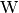

cerca documentation¶
Distance measurement system
| Author: | Pedro I. López |
|---|---|
| Contact: | dreilopz@gmail.com |
| License: | Creative Commons Attribution 3.0 Unported License |
| Date: | November 02, 2012 |
| Version: | 1.0.4 |
Project’s website: http://www.dreilopz.me/cerca
Video demonstration: http://youtu.be/OE_qz_wE0Hs

Introduction¶
Project cerca is a PC-based distance measurement system, developed for the school course 482 - TÓPICOS SELECTOS DMI I [1] at FIME UANL. cerca has only been tested on Windows XP and Fedora 15 but should work on Windows Vista, Windows 7, Mac OS X, and most Linux distributions. The software is implemented in Python 2 and C. cerca was designed and implemented by Pedro I. López [dreilopz@gmail.com]. The project is publicly released for educational purposes and under permissive licenses.
The sections System elements and System design list (symbolic) names of different elements of the system that are used throughout the document.
Note
In this document the standard Unix-like path notation is used.
Note
Every path is relative to the project’s distribution main directory.
System requirements¶
- Supported operating system:
- Windows XP (tested)
- Windows Vista
- Windows 7
- Most Linux distributions (tested on Fedora 15)
- Mac OSX
- 1 serial port RS232.
Note
If your computer doesn’t have a physical serial port you will need to use an adaptor, for example an USB-RS232 adaptor with a compatible driver.
System elements¶
Note
See section System design for other system-wide definitions.
| quantity | element | description | symbolic name |
|---|---|---|---|
| 1 | PC | Personal computer with compatible operating system | - |
| 1 | Object | Solid object | OBJ |
| 1 | ATMEGA88PA | 8-bit microcontroller | - |
| 1 | 4N26 | Opto-isolator | - |
| 1 | 4 crystal | Standard frequency crystal | - |
| 2 | 22 capacitor | Capacitor for oscilator subcircuit | - |
| 1 | Stripboard | 7 x 14.5 stripboard | - |
| 1 | 0.1 capacitor | - | - |
| 1 | Power terminal | - | |
| 2 | 330 , ½  resistor | - | - |
| 1 | 100 , ½ resistor | - | - |
| 1 | 220 , ½ resistor | - | - |
| 1 | GP2Y0A21YK | Distance measurement infrared sensor | - |
| 1 | Blue LED | 5 LED | VISOUT |
| 1 | White LED | 5 LED | STATUSLED |
| 1 | PRT-00449 | RS232 shifter | - |
| 1 | Buzzer | 3.7 , 3-24 , 95 | AUDOUT |
| 1 | 28-pin IC base | - | - |
| 1 | 8-pin IC base | - | - |
| 4 | Generic screws | - | - |
| 1 | Power switch | - | - |
| 1 | Power jack | - | - |
| 1 | Project case | Plastic project case | - |
| 1 | RS232 cable | - | - |
| 1 | Power supply | 5 1 | PS |
System design¶
Note
See section System elements for other system-wide definitions.
Project cerca’s purpose is to measure the distance between a solid object and the system, indicating this data to the user through an audiovisual signal. The distance to be measured is in the range of 10 to 80 [SENSOR], and is the relative proximity between the optical sensor and a solid object. Output is reported (a) visually through VISOUT and the live plotting on the PC if logging is on and (b) audibly through AUDOUT. As OBJ gets closer to the GP2Y0A21YK the on-off period of VISOUT decrements, and viceversa. The case for the auditory signal through AUDOUT is analogous.
As stated in the section Introduction, cerca is a project developed for a school course. The following are factors influencing the project’s design and implementation:
- High priority
- Low implementation time.
- Portability across different systems.
- Simple design.
- Low cost.
- Low priority
- Extensibility.
- Ease of use.
- Ease of installation.
- Tight integration of the subsystems.
The project is split in 2 subsystems connected through a serial communication in a client-server architecture (see Figure cerca’s system diagram.):
- cuc
- (server) Main acquisition system, an electronic circuit including the ATMEGA88PA, GP2Y0A21YK (sensor), AUDOUT, VISOUT and PRT-00449 (RS232 level shifter), all enclosed in a project case.
- cpc
- (client) PC and cpc.py Python program. Optionally run to live-plot the acquisition and log the data to a file.
Subsystems¶
cuc¶
cuc is the main data acquisition system, an electronic circuit including the ATMEGA88PA, GP2Y0A21YK (sensor), AUDOUT, VISOUT and PRT-00449 (RS232 level shifter), all enclosed in a project case. cerca and cuc have 2 operation modes:
| Normal mode: | cuc operates on its own without cpc, outputting the proximity to OBJ without units. This is the default mode when cuc is turned on. |
|---|---|
| Serial mode: | cpc makes cuc enter serial mode through the serial connection, see section Operation. In addition to the normal mode functionality, cerca plots the proximity versus time and displays it in . STATUSLED blinks faster. |
The ATMEGA88PA program cuc.c periodically executes the following tasks:
- Analog to digital conversion of the GP2Y0A21YK’s output voltage, storing the result in a global variable (see ADC0_value(), set_distance() and DISTANCE).
- Updating the on-off period of VISOUT and AUDOUT using a timer that generates a square wave at the ATMEGA88PA’S OC1A pin. The period of this signal is proportional to the distance measurement between GP2Y0A21YK and OBJ (see signal_update()).
- Send data (if) requested by cpc through serial transmission interruptions (see ISR(USART_RX_vect)).
cuc.c¶
cuc source code. Developed with avr-libc. Run on ATMEGA88PA inside cuc.
- volatile unsigned char MODE¶
cuc’s operation mode, one of {SERIAL_MODE, NORMAL_MODE}. When MODE is SERIAL_MODE, STATUSLED blinks faster. See MODE_DELAY.
- volatile unsigned int MODE_DELAY¶
Sets STATUSLED blinking delay depending on what mode cuc is on (see MODE).
- volatile unsigned int DISTANCE¶
Number proportional to the distance between the GP2Y0A21YK and OBJ, stores the result of the analog to digital conversion of GP2Y0A21YK output.
- ISR(TIMER1_COMPA_vect)¶
TIMER1 interrupt handler. The sampling of GP2Y0A21YK data is done here if operating in NORMAL_MODE, otherwise the sampling is performed at ISR(USART_RX_vect).
- ISR(USART_RX_vect)
USART interrupt handler. The sampling of GP2Y0A21YK output is performed here if operating in SERIAL_MODE, otherwise it is done at ISR(TIMER1_COMPA_vect). Sends conversion value to cpc when requested.
- unsigned char ReadUSART(void)¶
Reads 1 byte from USART’s buffer.
- void WriteUSART(unsigned char byte)¶
Writes 1 byte to USART’s buffer.
- void signal_update(unsigned int timer1_top)¶
Updates the square wave signal that drives VISOUT and AUDOUT.
- void TIMER1_off(void)¶
Turns TIMER1 off.
- void TIMER1_on(void)¶
Turns TIMER1 on.
- unsigned int ADC0_value(void)¶
Perform analog to digital conversion and return the result.
- void ioinit(void)¶
I/O system initialization (UART, TIMER1, STATUSLED, ADC).
- int main(void)¶
Main function, call ioinit() then enter a infinite loop blinking STATUSLED with a delay that depends on the operation mode (MODE and MODE_DELAY).


{kind=link}
{kind=link}
{kind=link}
{kind=link}
{kind=link}
{kind=link}
{kind=link}
cpc¶
PC and cpc.py Python program. cpc and cuc are connected through a serial connection.
cpc.py¶
Graphical application that live-plots and logs to a file the acquired data through cuc. See screenshot in Figure cpc: Logging the measurement. and section Operation.
- class cpc.UC[source]¶
cuc software abstraction.
- __init__(port=None)[source]¶
Parameters: port (cpc.serial.Serial) – serial port abstraction instance.
Installation¶
- Install cpc dependencies:
- Install Python >=2.7.1 CPython implementation; see Python Setup and Usage, sections 2.1, 3.1 and/or 4.1.
- Install pySerial >=2.5; see pySerial, section Installation.
- Install wxPython >= 2.8 (unicode); see Downloads & Stuff, section Stable Release and follow the instructions that correspond to your platform/OS.
- Install matplotlib >=1.0.1; see Installing.
- Extract the cerca distribution package to a directory of your choice.
Your cerca is now installed and ready to be operated.
Operation¶
Follow these steps to operate cerca.
Note
The screenshots provided are from cpc executed on Windows XP.
Plug the RS232 cable to the case and to your computer, either directly or through an adaptor.
Position the case wherever you are performing the measurement.
Plug PS to the cuc.
Power up PS.
Turn cuc on.
Change current directory to cpc and execute the file cpc.py.
Choose the serial port to use, see Figure cpc: Choosing a serial port..
cpc: Choosing a serial port.
Browse for the directory where you will save the log file, see Figure cpc: Browse for directory to save log file..
cpc: Browse for directory to save log file.
Enter a filename for the log file. Make sure to use the extenstion csv. See Figure cpc: Enter a filename for the log file..

cpc: Enter a filename for the log file.
Figure cpc: Window before starting logging. shows the cpc window before starting logging. Toggle the OFF button on screen to start logging in serial mode (STATUSLED blinks faster).

cpc: Window before starting logging.
The system is measuring the distance between cuc and OBJ, and reporting the acquired data through VISOUT, SOUT and the live plotting on PC; see Figure cpc: Logging the measurement.. You can stop the logging by pressing the button again, effectively returning to normal mode. Even when not logging VISOUT and SOUT will still report. If the measurement is out of range the window will look like Figure cpc: Out of range measurement..
To exit cpc just close the window.
Turn cuc off (black switch).
Power off PS.
Unplug RS232 cable.
{kind=link}
{kind=link}
TODO¶
- Improve cuc and cpc documentation.
Footnotes¶
| [1] | The complete name of the school subject is Tópicos selectos de diseño de máquinas inteligentes, which is spanish for selected topics for intelligent machines design. |
References¶
| [SENSOR] | GP2Y0A21YK/GP2Y0D21YK General Purpose Type Distance Measuring Sensors. Sharp. Retrieved March 2, 2012, from http://www.sparkfun.com/datasheets/Components/GP2Y0A21YK.pdf. |
| [SENSOR1] | Sensing distance (SHARP GP2Y0A21YK). oomlout. Retrieved March 4, 2012, from http://oomlout.com/PROX/PROX-Guide.pdf. |